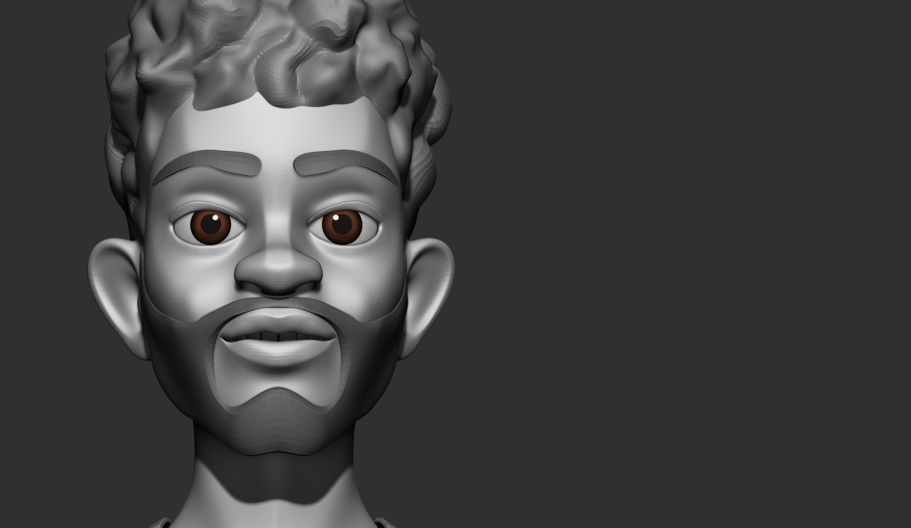

About Walter
Walter is awesome! He is a 22 year old Web Developer from Oakland, CA. He went from a quiet kid who loves computers, to an astute, charismatic young man who has a passion for the details of technical appearance.
Walter on the cover "Computer Science Cuties" in March 2022
What's Up with Walter?
- He's a Lead Web Developer at Pleasant News Marketing.
- He's a graduate of Norfolk State University.
- He has a Bachelor's in Computer Science.
- He's a member of Iota Phi Theta Fraternity Inc.
- He's a volunteer mentor at Code for Kids.
Who Are Walter's Friends?
Walter has a few awesom friends he's had since the 8th grade. Each of them have gone on to pursue their own passions in life, but his best friend is Castro. Castro is his right hand man. Castro has been his friend through thick and thin. Walter would do anything for Castro. Click on the list below to read more about Castro and other friends!